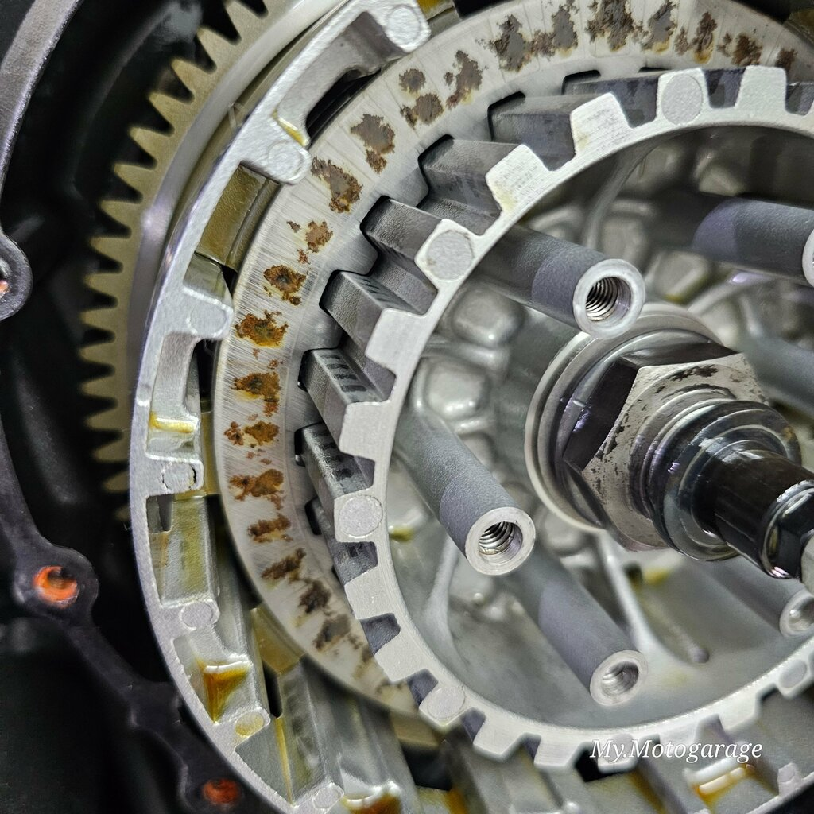
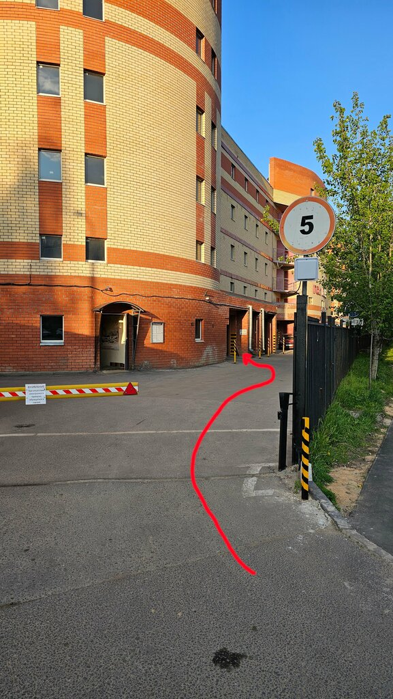
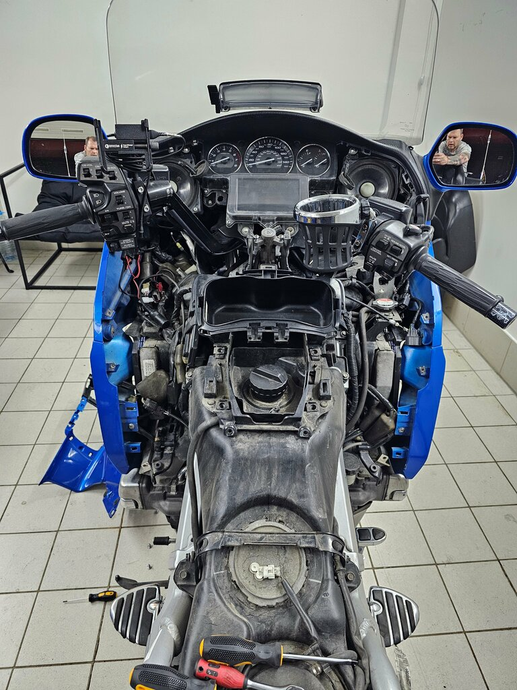
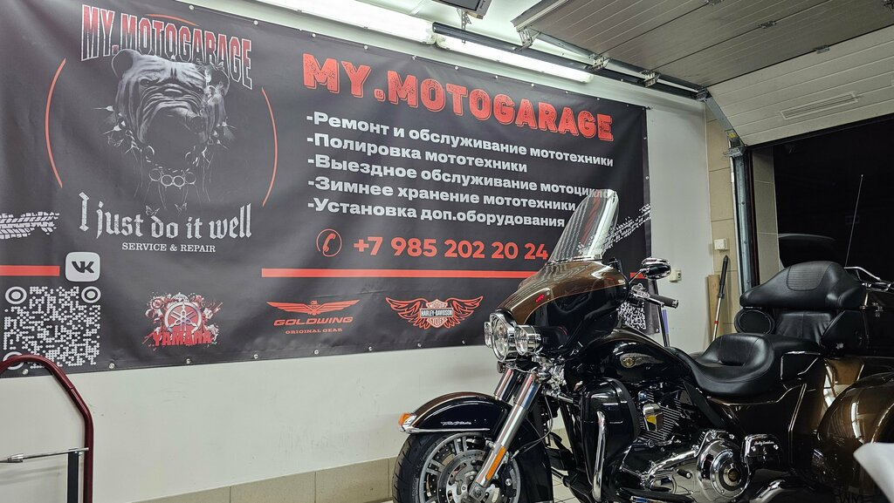

Зеленоград · ежедневно, 11:00–20:00
Мотосервис в Зеленограде, которому доверяют свою технику.
Ремонт, ТО и подготовка к сезону для мотоциклов, эндуро и трициклов. Сначала разбираемся в задаче, потом согласуем работы и держим связь до выдачи.



Услуги
Сразу выберите задачу: что делаем, когда это нужно и почему у нас.
Второй блок ведёт по логике владельца: сначала понять свою ситуацию, затем выбрать услугу и быстро перейти к записи.
01
Мотосервис
ТО и сезонная подготовка
Что за услуга
Комплексная проверка масла, фильтров, тормозов, цепи, света, крепежа и базовых узлов перед активными поездками.
Для кого и когда
Для тех, кто открывает сезон, купил мотоцикл с рук, долго не ездил или хочет спокойно уехать в дальнюю поездку.
Почему у нас
Смотрим технику целиком, объясняем приоритеты простым языком и не навязываем работы, которые можно отложить.
02
Мотосервис
Замена масла и фильтров
Что за услуга
Подбор и аккуратная замена масла, масляного и воздушного фильтра с осмотром состояния расходников.
Для кого и когда
Нужна по регламенту, после покупки техники, перед сезоном или если масло давно не менялось.
Почему у нас
Работаем чисто, фиксируем внимание на утечках и даём понятную рекомендацию по следующему интервалу обслуживания.
03
Мотосервис
Тормоза и колодки
Что за услуга
Замена колодок, проверка дисков, прокачка контуров и диагностика тормозной системы.
Для кого и когда
Если увеличился тормозной путь, ручка стала мягкой, появился скрип, вибрация или колодки подходят к пределу.
Почему у нас
Тормоза не терпят догадок: проверяем систему последовательно и согласуем каждую работу до ремонта.
04
Мотосервис
Ремонт суппортов
Что за услуга
Разборка, очистка, оценка состояния поршней и уплотнений, сборка и проверка работы суппортов.
Для кого и когда
Для случаев, когда колесо подклинивает, колодки стираются неравномерно или тормоза работают рывками.
Почему у нас
Уделяем внимание мелочам, из-за которых проблема возвращается: грязь, закисание, износ резинок и неправильная сборка.
05
Мотосервис
Сцепление и привод
Что за услуга
Регулировка сцепления, диагностика пробуксовки, замена сцепления, цепи, звёзд и сопутствующих деталей.
Для кого и когда
Если передачи включаются грубо, сцепление буксует, цепь растянута или появились рывки при разгоне.
Почему у нас
Сначала отличаем регулировку от реального износа, чтобы не менять узлы раньше времени.
06
Мотосервис
Вилка и подвеска
Что за услуга
Переборка вилки, замена масла и сальников, проверка люфтов, состояния направляющих и работы подвески.
Для кого и когда
Нужна при потёках масла, клевках при торможении, нестабильности в поворотах или после жёсткой эксплуатации.
Почему у нас
Работа с подвеской требует аккуратности: разбираем, очищаем и собираем без спешки, с контролем состояния деталей.
07
Мотосервис
Регулировка клапанов
Что за услуга
Проверка и настройка клапанных зазоров по модели техники с оценкой сопутствующих признаков износа.
Для кого и когда
Актуально по пробегу, при сложном запуске, изменении звука двигателя или после покупки мотоцикла без истории.
Почему у нас
Не ограничиваемся одной цифрой: смотрим контекст, чтобы владелец понимал, что происходит с мотором.
08
Мотосервис
Подшипники колёс
Что за услуга
Диагностика люфтов, замена подшипников и проверка посадки, вращения и сопутствующих элементов.
Для кого и когда
Если появился гул, биение, люфт, странная вибрация или техника готовится к сезону после хранения.
Почему у нас
Проверяем не только сам подшипник, но и то, что могло привести к ускоренному износу.
09
Мотосервис
Полировка и восстановление фар
Что за услуга
Полировка пластика и лакокрасочных элементов, восстановление прозрачности фар и внешнего вида техники.
Для кого и когда
Подходит перед продажей, после сезона, при мутных фарах, мелких потёртостях и уставшем внешнем виде.
Почему у нас
Делаем без агрессивного подхода: сохраняем материал и заранее объясняем, какой результат реалистичен.
10
Мотосервис
Ультразвуковая чистка
Что за услуга
Глубокая очистка деталей и мелких узлов от загрязнений в ультразвуковой ванне без грубой механики.
Для кого и когда
Нужна для деталей после долгого простоя, загрязнений, следов старого топлива, масла или труднодоступной грязи.
Почему у нас
Метод помогает аккуратно добраться туда, где щётка и тряпка бессильны, особенно при восстановлении техники.

Почему приезжают
Без лишнего шума: понятные работы, связь по делу и реальная мастерская.
4.9
рейтинг на Яндекс Картах
64
фото и материалы в карточке бизнеса
7/7
работаем ежедневно с 11:00 до 20:00
Цены
Ориентиры “от”, чтобы быстро понять порядок работ.
Финальная стоимость зависит от модели, состояния узлов и расходников. Перед ремонтом согласуем объём и цену.
Замена моторного масла
от 1 500 ₽
Замена колодок
от 1 000 ₽
Прокачка тормозной системы
от 1 500 ₽
Ремонт суппортов
от 3 000 ₽
Регулировка клапанов
от 6 000 ₽
Переборка вилки
от 10 000 ₽
Замена сцепления
от 12 000 ₽
Как записаться
Три шага от сообщения до готовой техники.
Описываете задачу
Напишите модель, симптомы и желаемую дату. Можно сразу приложить фото или видео.
Согласуем диагностику
Подскажем ориентир по работам, времени и расходникам до приезда.
Делаем и держим связь
После осмотра согласуем объём работ и сообщим, когда техника готова.
Отзывы
Клиенты чаще всего отмечают внимание к деталям и понятные цены.
Короткая выжимка из отзывов на Яндекс Картах. Полные отзывы открываются в карточке бизнеса.
★★★★★
“Отмечает комплексную подготовку к сезону, ровные колеса, тормоза и понятную цену.”
Дмитрий М.★★★★★
“Пишет, что мотоцикл привели в порядок: масло, детали, шины и работа с выхлопом.”
Наталья П.★★★★★
“Хвалит внимательное отношение к технике и понятное объяснение по работам.”
Клим МорозовФото
Реальные снимки мастерской с Яндекс Карт.
FAQ
Перед записью обычно спрашивают это.
Можно приехать без записи?
Лучше заранее написать или позвонить: так мастерская подготовит окно и не заставит ждать.
Можно ли прислать видео с проблемой?
Да. Видео со звуком, фото узла и модель техники помогут быстрее сориентироваться по диагностике.
Работаете с эндуро?
Да, в карточке бизнеса указана работа с эндуро и другой мототехникой.
Когда понятна итоговая цена?
После осмотра и согласования работ. На сайте указаны стартовые цены “от”.
Контакты
Запишите технику на удобное время.
Напишите в Telegram, позвоните или оставьте короткую заявку. Чем подробнее опишете задачу, тем точнее будет первичный ориентир.